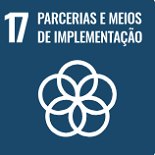
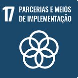

Projetos
Conheça alguns projetos para cumprir o objetivo de energia limpa e acessível. Alguns destes projetos abragem mais de uma meta do ODS.
Litro de Luz

Uma associação que leva iluminação a residentes de comunidades locais sem acesso a qualquer forma de energia elétrica. Suas iniciativas incluem a criação de luminárias a partir de garrafas plásticas, a implementação de painéis solares e a utilização de lâmpadas LED. Por meio de seu site, você pode fazer o download de e-books que fornecem instruções detalhadas sobre a montagem desses dispositivos. Para saber mais, acesse: blog litro de luz.
Saiba mair em: Litro de luz.
Enersud
São fabricantes de energia eólica de pequenos portes. Entre os produtos estão: bicicleta geradora de energia
https://www.enersud.com.br/sobre/
Green Academy

É uma plataforma educacional destinada a promover o engajamento e a educação a respeito dos 17 Objetivos de Desenvolvimento Sustentável (ODS), juntamente com seus desafios de desenvolvimento em escala global. Além de oferecer aulas esclarecedoras sobre cada um dos ODS, o portal proporciona acesso a projetos correlacionados a cada meta. Adicionalmente, é possível cadastrar o seu próprio projeto por meio dessa plataforma. Para cadastrar o seu projeto, acesse a página da Green Academy
Saiba mais em: Portal Green Academy
Economizar Energia
Além dos projetos citados acima, todos nós podemos fazer a nossa parte economizando energia.

Desligue luzes e aparelhos eletônicos: Mesmo em modo de espera, muitos dispositivos continuam consumindo energia.

Use lâmpadas LED: são mais eficientes e duradouras, o que ajudará a economizar energia a longo prazo.

Aproveite a luz natural: aproveitar ao máximo a luz natural em vez de depender tanto da iluminação artificial.

Vede janelas e portas: Certifique-se de que suas janelas e portas estejam bem vedadas para evitar perdas de calor no inverno ou ganho de calor no verão.

Use eletrodomésticos eficientes: opte pelos que possuem o selo de eficiência energética.

Evite uso durante o horário de pico - Sempre que for possível, utilize aparelhos elétricos fora do intervalo das 17h30 às 21h
https://exame.com/bussola/13-dicas-para-economizar-energia-no-dia-do-meio-ambiente/


 
